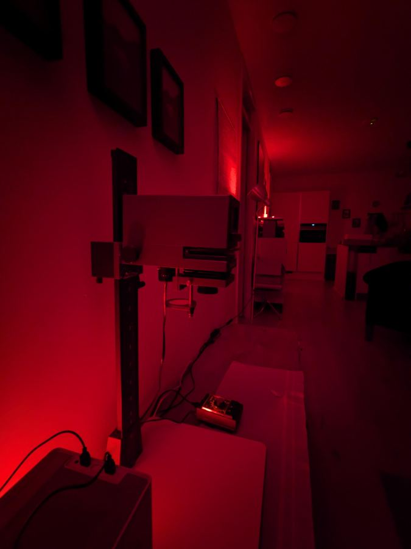

You’re subscribed
Thanks for confirming — you’ll hear from me when there’s news. In the meantime, here’s what the workshops are all about.
Hi people! This is gonna be a newsletter with info about my photography darkroom workshops!
In Dutch, the darkroom is called the doka, short for donkere kamer, which means… dark room.
Welcome to Daniel’s Doka!

Option A
Option B
Option C
Option D
If you are some kind of weirdo like me that already possesses developed film negatives, let me know!!! We can do a workshop much sooner. We would skip to the photo printing, the most artful and fun part.
Tip: for those of you visiting parents any time soon, ask them if they have old negatives!!!!
Otherwise you could also choose one of mine that you like.
The other type of workshop covers the full process, starting with developing film negatives and printing a contact sheet. This takes more planning. It would go like this:
Stay tuned for more!
Questions in the meantime? Get in touch.